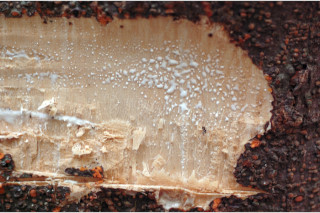
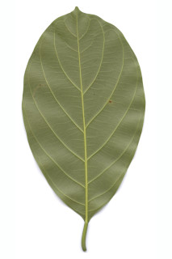
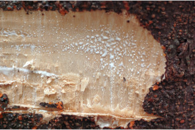
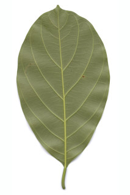

Evergreen trees up to 20 m tall.
20 ಮೀ. ಎತ್ತರದವರೆಗಿನ ಹರಿದ್ವರ್ಣ ಮಾದರಿಯ ಮರಗಳು.
Evergreen trees up to 20 m tall.
பசுமைமாறாமரம் 20 மீ. உயரம் வரை வளரக்கூடியது.
Trunk usually tubercled; bark blackish-grey, lenticels reddish-brown, irregularly flaky; blaze cream.
ಕಾಂಡ ಸಾಮಾನ್ಯವಾಗಿ ಗುಬುಡುಗಳ ಸಮೇತವಿರುತ್ತದೆ;ತೊಗಟೆ ಕಪ್ಪು ಮಿಶ್ರಿತ ಬೂದು ಬಣ್ಣದಲ್ಲಿದ್ದು ಕೆಂಪು ಮಿಶ್ರಿತ ಕಂದು ಬಣ್ಣದ ಸೂಕ್ಷ್ಮ ವಾಯುವಿನಿಮಯ ಬೆಂಡು ರಂಧ್ರಗಳ ಸಮೇತವಿದ್ದು ಅನಿಯತವಾಗಿ ಚಕ್ಕೆಯೇಳುತ್ತದೆ;ಕಚ್ಚು ಮಾಡಿದ ಜಾಗ ಕೆನೆ ಬಣ್ಣದಲ್ಲಿರುತ್ತದೆ.
Trunk usually tubercled; bark blackish-grey, lenticels reddish-brown, irregularly flaky; blaze cream.
தண்டு கழலைகளுடையது; மரத்தின் பட்டை கருப்பு-சாம்பல் நிறமானது, லெண்டிசெல் சிவப்பு-ப்ரவுன் நிறமானது, ஒழுங்கற்ற செதில்களாக உதிருபவை; உள்பட்டை கிரீம் நிறமானது.
Branchlets terete, glabrous.
ಕಿರುಕೊಂಬೆಗಳು ದುಂಡಾಗಿದ್ದು ರೋಮರಹಿತವಾಗಿರುತ್ತವೆ
Branchlets terete, glabrous.
சிறியநுனிக்கிளைகள் குறுக்குவெட்டுத் தோற்றத்தில் வளையமானது, உரோமங்களற்றது.
Latex white, profuse.
ಜಿನುಗು ದ್ರವ ಬಿಳಿ ಬಣ್ಣದಲ್ಲಿದ್ದು ವಿಫುಲವಾಗಿರುತ್ತದೆ.
Latex white, profuse.
வெள்ளை நிற பால் அதிகளவு சுரக்கிறது
Leaves simple, alternate, spiral; stipules oblong or lanceolate, to 5 x 1.8 cm, caducous, leaving annular scar; petiole 1-3 cm long, planoconvex, glabrous; lamina 9-23 x 5-12 cm, usually narrow obovate sometimes elliptic, apex shortly acuminate or obtuse, base cuneate, margin entire (or 3-lobed in saplings), coriaceous, dark green above, glabrous; midrib raised above; secondary_nerves 6-10 pairs, ascending; tertiary_nerves broadly horizontally percurrent.
ಎಲೆಗಳು ಸರಳವಾಗಿದ್ದುಪರ್ಯಾಯ ಮತ್ತು ಸುತ್ತು ಜೋಡನಾ ವ್ಯವಸ್ಥೆಯಲ್ಲಿರುತ್ತವೆ; ಕಾವಿನೆಲೆಗಳು ಚತುರಸ್ರ ಅಥವಾ ಭರ್ಜಿಯ ಆಕಾರದಲ್ಲಿದ್ದು 0.5 X 1.6 ಸೆಂ.ಮೀ. ಗಾತ್ರ ಹೊಂದಿದ್ದು ವಲಯಾಕಾರದ ಉದುರು ಗುರುತುಗಳನ್ನು ಉಳಿಸುತ್ತವೆ; ತೊಟ್ಟುಗಳು 1-3 ಸೆಂ.ಮೀ. ಉದ್ದ ಹೊಂದಿದ್ದು ಸಪಾಟ ಪೀನಮಧ್ಯದ ಆಕಾರವನ್ನು ಹೊಂದಿರುತ್ತವೆ ಮತ್ತು ರೋಮರಹಿತವಾಗಿರುತ್ತವೆ;ಪತ್ರಗಳು 9 -23.5 X 5 – 12 ಸೆಂ.ಮೀ. ಗಾತ್ರವಿದ್ದು ಸಾಮಾನ್ಯವಾಗಿ ಸಂಕುಚಿತ - ಬುಗುರಿ ಕೆಲವು ವೇಳೆ ಅಂಡವೃತ್ತದ ಆಕಾರದಲ್ಲಿರುತ್ತವೆ, ಪತ್ರದ ತುದಿ ಕೊಂಚ ಕ್ರಮೇಣ ಚೂಪಾಗುವ ಅಥವಾ ಚೂಪಲ್ಲದ ರೀತಿಯಲ್ಲಿದ್ದು ಬೆಣೆಯಾಕಾರದ ಬುಡವನ್ನು ಹೊಂದಿರುತ್ತವೆ, ಅಂಚು ನಯವಾಗಿರುತ್ತದೆ(ಸಸಿಗಳಲ್ಲಿ 3-ಹಾಲೆಗಳಿರುತ್ತವೆ),ಮೇಲ್ಮೈ ತೊಗಲನ್ನೋಲುವ ಮಾದರಿಯಲ್ಲಿದ್ದು ಪತ್ರದ ಮೇಲ್ಭಾಗ ಹಸಿರಾಗಿದ್ದು ರೋಮರಹಿತವಾಗಿರುತ್ತದೆ;ಮಧ್ಯ ನಾಳ ಮೇಲ್ಭಾಗದಲ್ಲಿ ಕೊಂಚ ಮೇಲೆದ್ದಿರುತ್ತದೆ; ಎರಡನೇ ದರ್ಜೆಯ ನಾಳಗಳು 6 ರಿಂದ 10 ಜೋಡಿಗಳಿದ್ದು ಆರೋಹಣ ಮಾದರಿಯಲ್ಲಿರುತ್ತವೆ;ಮೂರನೇ ದರ್ಜೆಯ ನಾಳಗಳು ವಿಶಾಲವಾಗಿ ಲಂಬಕೋನಕ್ಕೆ ಅಡ್ಡವಾಗಿಎಲೆ ದಿಂಡಿಗೆ ಅಡ್ಡವಾಗಿ ಕೂಡುವ ವಿನ್ಯಾಸದಲ್ಲಿರುತ್ತವೆ.
Leaves simple, alternate, spiral; stipules oblong or lanceolate, to 5 x 1.8 cm, caducous, leaving annular scar; petiole 1-3 cm long, planoconvex, glabrous; lamina 9-23 x 5-12 cm, usually narrow obovate sometimes elliptic, apex shortly acuminate or obtuse, base cuneate, margin entire (or 3-lobed in saplings), coriaceous, dark green above, glabrous; midrib raised above; secondary_nerves 6-10 pairs, ascending; tertiary_nerves broadly horizontally percurrent.
இலைகள் தனித்தவை, மாற்றுஅடுக்கமானவை, சுழல் போன்று அமைந்தவை; இலையடிச்செதில் நீள்சதுர வடிவானது அல்லது ஈட்டி வடிவானது, 5 X 1.8 செ.மீ., எளிதில் உதிரக்கூடியது மற்றும் வட்டவடுக்களை ஏற்படுத்துகின்றன; இலைக்காம்பு 1-3 செ.மீ. நீளமானது, இலைக்காம்பு குறுக்குவெட்டுத் தோற்றத்தில் பிளேனோகான்வக்ஸ், உரோமங்களற்றது; இலை அலகு 9-23 X 5-12 செ.மீ., குறுகிய தலைகீழ் முட்டை வடிவானது சிலசமயங்களில் நீள்வட்ட வடிவானது, அலகின் நுனி சிறிய அதிக்கூரியது அல்லது மெட்டையானது, அலகின் தளம் ஆப்பு வடிவானது, அலகின் விளிம்பு முழுமையானது (அல்லது இளம்பருவத்தில் 3-பிளவுகளுடையது), கோரியேசியஸ், அலகின் மேற்பரப்பு கரும்பச்சை நிறம், உரோமங்களற்றது; மையநரம்பு மேற்புறத்தில் அலகின் பரப்பைவிட உயர்ந்து இருக்கும்; இரண்டாம் நிலை நரம்புகள் 6-10 ஜோடிகள், நுனி நோக்கி வளைந்தவை; மூன்றாம் நிலை நரம்புகள் அகன்ற கிடைமட்டமான பெர்க்கரண்ட் .
Flowers unisexual, in spikes enclosed by spathe-like bracts; male flowers in narrow cylindrical-oblong catkin on young branches; female flowers usually cauliflorus.
ಹೂಗಳು ಏಕಲಿಂಗಿಗಳಾಗಿದ್ದು ಕದಿರುಮಂಜರಿಯಲ್ಲಿದ್ದು ಆವರಣ ಪತ್ರಕದ ತರಹದ ಪತ್ರಕಗಳಿಂದ ಆವರಿಸಿರುತ್ತವೆ; ಗಂಡು ಹೂಗಳು ಎಳೆಯದಾದ ಕೊಂಬೆಗಳ ಮೇಲಿನ ಸಂಕುಚಿತ ವರ್ತುಲ ಸ್ಥಂಭ-ಚತುರಸ್ರದ ಆಕೃತಿಯುಳ್ಳ ಪುಷ್ಪದಳ ರಹಿತ ಏಕಲಿಂಗಿ ಪುಷ್ಪಗಳನ್ನೊಳಗೊಂಡ ಕದಿರು ಮಂಜರಿಯಲ್ಲಿರುತ್ತವೆ;ಹೆಣ್ಣು ಹೂಗಳು ಸಾಮಾನ್ಯವಾಗಿ ಕಾಂಡದ ಮೇಲಿರುತ್ತವೆ.
Flowers unisexual, in spikes enclosed by spathe-like bracts; male flowers in narrow cylindrical-oblong catkin on young branches; female flowers usually cauliflorus.
மலர்கள் ஓர் பாலானவை, ஸ்பைக் வகை மஞ்சரி ஸ்பேத் போன்ற செதில்களுடையது; ஆண் மலர்கள் குறுகிய உருளை-நீள்சதுர வடிவானது கேட்கின் வகை, சிறிய கிளைகளில் தோன்றக்கூடியது; பெண் மலர்கள் மரத்தண்டில் (காளிபுளோரி) தோன்றுபவை.
Syncarp (sorosis), large, oblong, with short hard echinate processes.
ಸಂಯುಕ್ತ ಫಲ(ತಿರುಳುಳ್ಳ ಸಂಯುಕ್ತ ಫಲ) ದೊಡ್ಡ ಗಾತ್ರ ಹೊಂದಿದ್ದು ಸಣ್ಣದಾದ ಮತ್ತು ಗಟ್ಟಿಯಾದ ಮುಳ್ಳುಗಳ ಸಮೇತವಿರುತ್ತದೆ.
Syncarp (sorosis), large, oblong, with short hard echinate processes.
சின்கார்ப் (சொரோசிஸ்), பெரியவை, நீள்சதுர வடிவானது, தடித்த முற்களுடையது.
 


